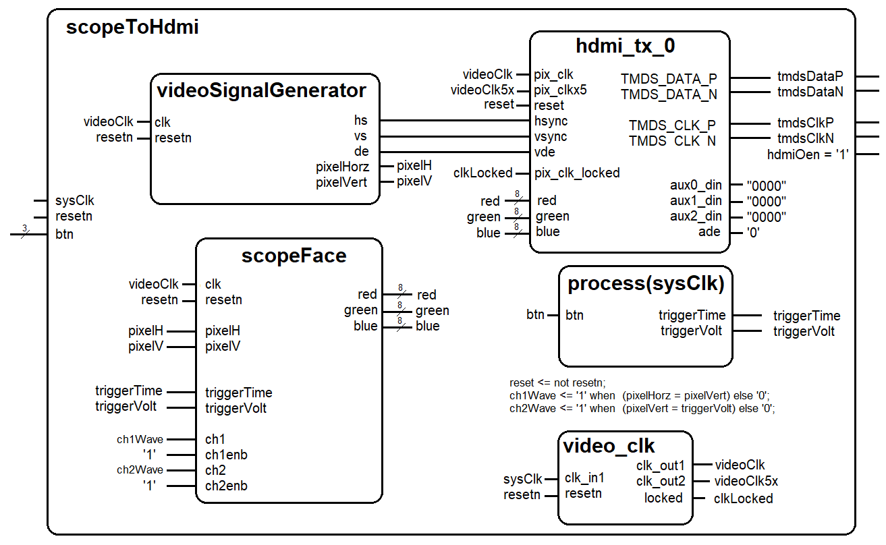

| Lecture | 11 |
| Class Objectives | Understand how to build the
VHDL code and configure the XDC file to run the vgaToHdmiConverter. |
Lab 02
For lab #2 you will use the Vivado tools to write the VHDL code for
an vgaToHdmiConverter component. You will simulate the code and then
synthesize it. We will use this component later
to display data captured by a high speed ADC.
vgaToHdmiConverter
The vgaToHdmiConverter display a static image on thje
Libraries
Architecture
The design of Lab 1 is broken down into separate modules, some of which
are provided for you and some which you will need to create. The
interconnection of the modules is illustrated in the following schematic.
When a signal name appears just inside a box, that should should correspond
to the name of that signal in the entity description.

rgb2dvi
Text describing I/O and behavior.
scopeFace
Text describing I/O and behavior.
videoSignalGenerator
Text describing I/O and behavior.
video_clk
Text describing I/O and behavior.
XDC file
Text describing entity to pins mapping.